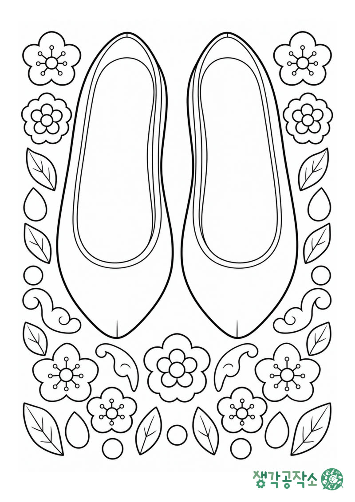

새 신을 신고 뛰어보자, 꽃신 도안 한 켤레 🌸
한복 입은 아이 발에
운동화를 신겨 본 적
있으신가요? 👟
안녕하세요, 생각공작소입니다. :)
이번에 나누는 도안은
위에서 내려다본
꽃신 한 켤레예요.
9월 추석을 앞두고
오감쑥쑥 수업에서
아이들이 직접 꾸몄던 꽃신이죠.
신을 칠하거나 한지로 덮고,
꽃과 잎 장식을 오려 붙여
나만의 꽃신을 만들어요. 🌸

준비물은 가위와 풀,
색연필이나 사인펜이에요.
한지가 있으면
물풀과 같이 꺼내 두세요.
없으면 색종이도 괜찮아요.
A4 용지에 100%로 인쇄해요.
'페이지에 맞춤'을 끄면
도안이 아이 크기 그대로 나와요.
①
신 두 짝부터 꾸며요.
사인펜으로 칠해도 되고,
한지를 작게 찢어
한 조각씩 붙여도 돼요.
신 바닥 자리는
좋아하는 그림을 그려 넣기 좋아요.
②
꽃과 잎, 구름 무늬 장식에도
색을 칠해요.
③
굵은 바깥 선을 따라 오려요. ✂️
안쪽 선은 자르지 않아요.
구름 무늬는 끝이
동그랗게 말려 있어서
가위를 여러 번 돌려야 해요.
이 부분은 보호자님이
조금 도와주세요 :)
④
접는 곳이 없으니
오린 장식은 바로 풀칠해
신에 붙이면 돼요.
"장식은 어디에 붙이면 좋을까요?"
앞코에 꽃을 모아 붙여도 되고,
신 둘레에 잎을 빙 둘러도
잘 어울려요.
⑤
두 짝을 도화지에 나란히 붙이고
실을 달면 벽에 걸어 둘 수 있어요.
얇은 복사지라면
인쇄한 뒤 도화지에
한 번 덧붙여 주세요.
오릴 때도, 들고 놀 때도
훨씬 튼튼해요.
수업에서 꽃신을 다 만든 아이는
두 짝을 양손에 받쳐 들고
선생님께 먼저 보여 줬어요. ✨
생각공작소의 오감쑥쑥 선생님은
매주 아이 집으로 찾아가
1:1로 함께 만들어요. 🌿
오감 쑥쑥! 생각 쑥쑥!
📞 생각공작소 032-277-2007